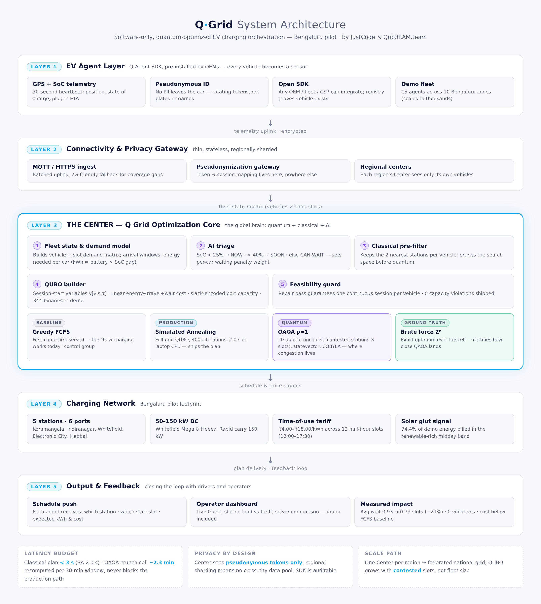
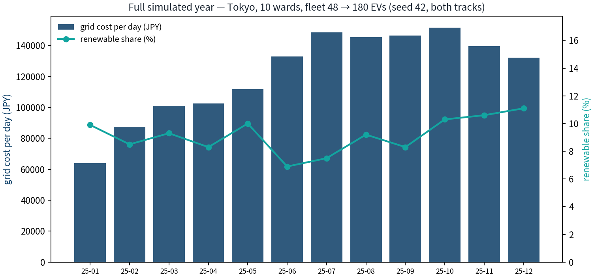
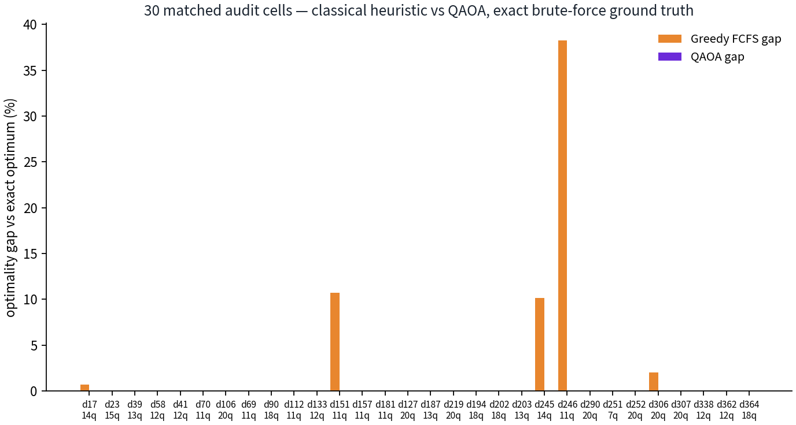
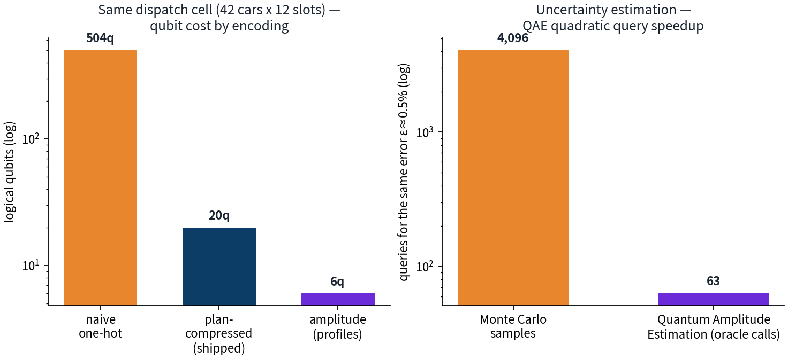
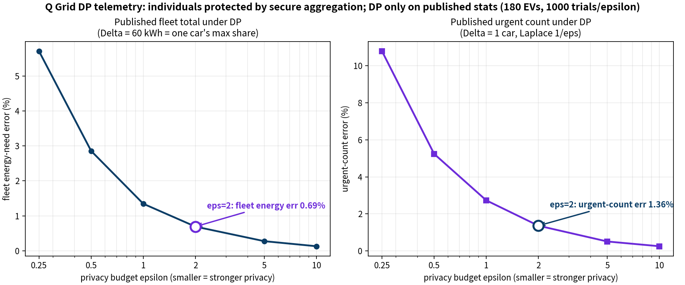
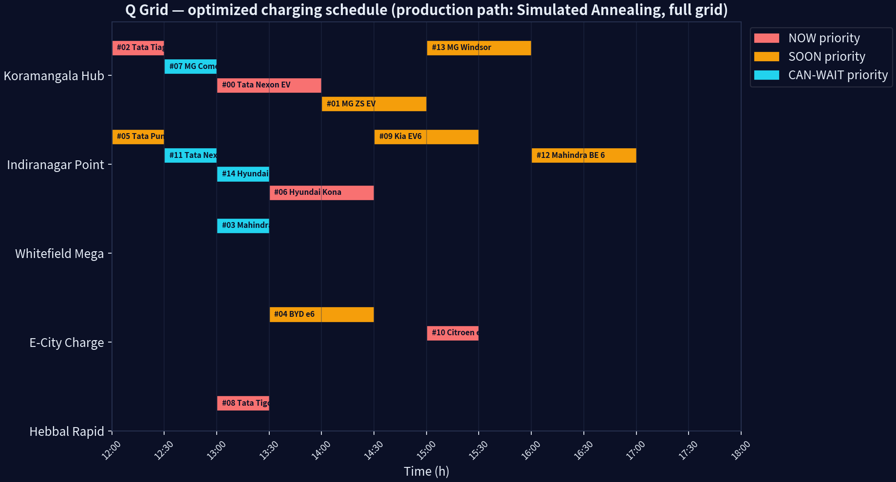
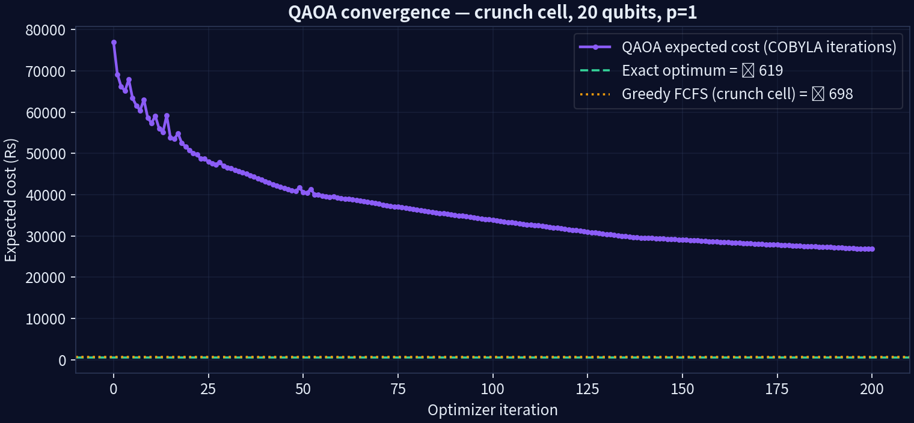
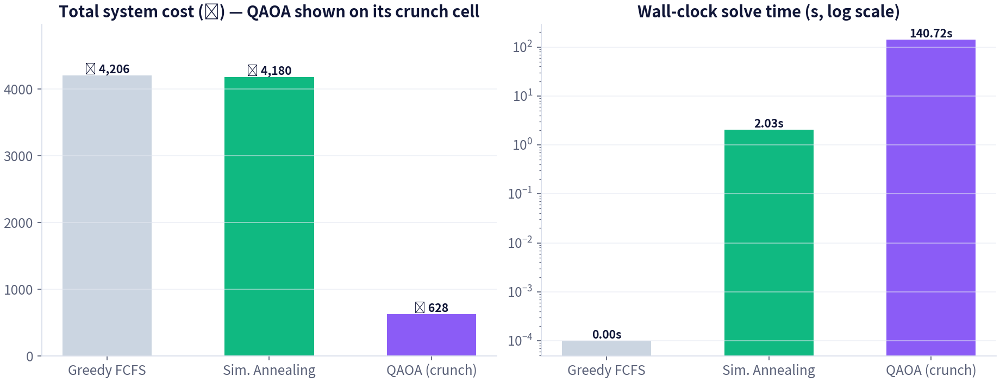

Tokyo's network is a patchwork of small stations. At midday, solar glut makes power nearly free; evenings price it at a premium. Yet drivers arrive when they are free, cluster at the nearest hub, and queue — cheap renewables curtail unused while peakers fire at dusk.
In our simulated Tokyo year the fleet grows 48 → 180 EVs on the same 11 stations, and naive first-come-first-served dispatch leaves money on the table in every contested window — worst case 38.23% above the exact optimum.
We optimize assignment + scheduling: which station, which slot, per car — minimizing grid cost + driver travel + waiting under strict port capacity. A city-scale QUBO: the class where exact search explodes 2ⁿ and quantum earns its seat.
| Solver | Role | Scope |
|---|---|---|
| Greedy FCFS | baseline — what operators run today | full grid |
| Simulated Annealing | production path · 400k iters | full grid (344 QUBO binaries) |
| QAOA p=1 (COBYLA, 8k shots) | quantum attack on the crunch cell — most contested stations × slots | 20-qubit subproblem |
| Exact brute force | referee — ground truth | crunch cell (2²⁰) |

# the same 6-qubit Tokyo profile, rebuilt in Qiskit from qiskit.circuit.library import StatePreparation from qiskit.quantum_info import Statevector from qiskit.primitives import StatevectorSampler qc = QuantumCircuit(6) qc.append(StatePreparation(amps), range(6)) fid = abs(np.vdot(amps, Statevector(qc).data))**2 shots = StatevectorSampler(seed=42).run([qc]).result()
min Σ_v,s,τ y[v,s,τ]·( E(v,s)·tariff(τ)
+ 9·dist(v,s) + w(v)·(τ − arr_v) )
s.t. Σ_s,τ y[v,s,τ] = 1 # each car charges once
Σ_v x[v,s,τ] + u[s,τ] = ports(s) # EXACT equality

| Track | Days | QAOA |
|---|---|---|
| Classical c1–c3 | 0–182 | off |
| Quantum c4–c6 | 183–364 | on |


# Givens-disentangling prep, Shende–Bullock–Markov bound rotations.append((j, x >> (j + 1), theta)) # full context day_profile /= np.linalg.norm(day_profile) # L2 = a state amps = np.zeros(64); amps[:48] = profile # zero-pad # → 47 Ry + 57 CNOTs, fidelity 1.000000
| Quantity | True | QAE RMSE | Oracle calls |
|---|---|---|---|
| year-mean renewable | 9.2% | 0.0077 | 63 |
| daily-max renewable | 21.2% | 0.0102 | 63 |
| midday solar-glut | 74.4% | 0.0083 | 63 |




# clone & run the demo (seed 42, fully deterministic) git clone https://github.com/Aghosh-mv/Q-Grid.git pip install -r requirements.txt python3 src/qgrid_engine.py # → results/, charts/ python3 src/amplitude_encoding.py # → 65× QAE proof python3 src/qiskit_bridge.py # → Qiskit cross-check python3 src/privacy_layer.py # → privacy audit # year trial: python3 src/qgrid_year.py (chunks c1–c6)